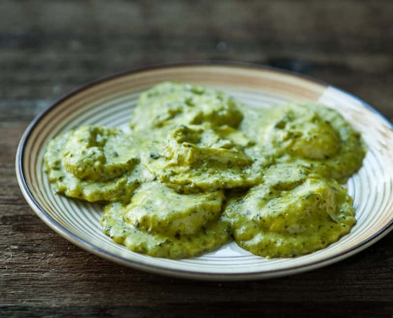

Spinach Feta Ravioli

Description
This is my personal favourite pasta that I eat mainly on special occasions in an Italian restaurant near where I live.
This recipe taken from here. Special thanks to Sunny Anderson for sharing her recipe.
Ingredients
- 2 cups fresh ricotta
- 1/2 teaspoon nutmeg
- 1 lemon, zested and juiced
- Kosher salt and freshly ground pepper
- 1 (12 ounce/340 grams) package wonton wrappers
- 1 egg white, lightly beaten
- 4 cups spinach, loosely packed
- 1/2 cup grated parmesan cheese
- 1/2 cup olive oil
- 1 clove garlic (optional)
Steps
- Step 1
- In a small bowl, mix together ricotta, 1/4 cup hazelnuts, nutmeg, lemon zest, and salt and pepper to taste.
- Step 2
- Lay several wonton wrappers on a work surface. Scoop a generous tablespoon of the ricotta filling into the center of each wrapper, and brush outside edges with egg white. Lay another wonton wrapper on top of each, and press firmly with fingertips to press out air and seal ravioli.
- Step 3
- Transfer ravioli to a parchment-lined baking sheet. Repeat with remaining wonton wrappers and filling, making 18 to 20 ravioli total. Cover baking sheet with a damp paper towel and transfer to refrigerator to set up, about 30 minutes.
- Step 4
- To make the spinach pesto: In a food processor, combine remaining 3/4 cup hazelnuts, lemon juice, spinach, garlic, parmesan, olive oil, and salt and pepper to taste and puree until smooth.
- Step 5
- Fill a large pot with water, salt liberally, and bring to a boil. Cook ravioli in three batches, until they are cooked and float to the top, about 2 to 3 minutes.
- Step 6
- Strain and transfer to serving bowls with a dollop of spinach pesto.